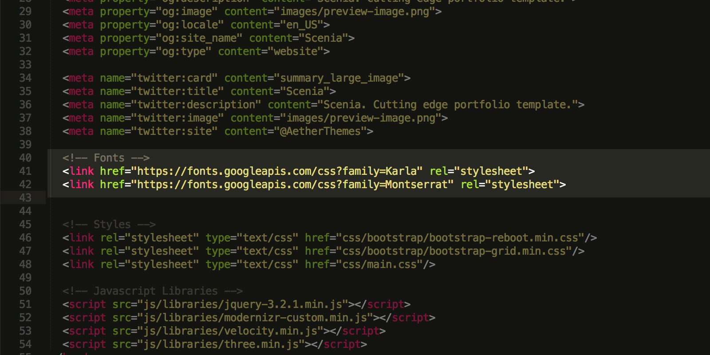
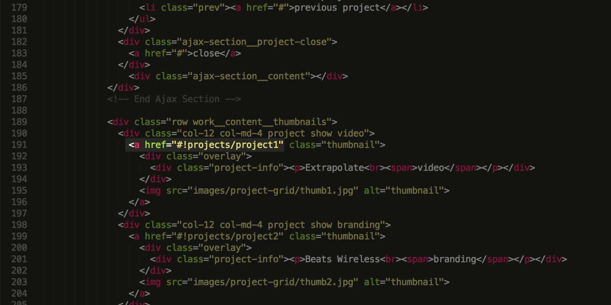
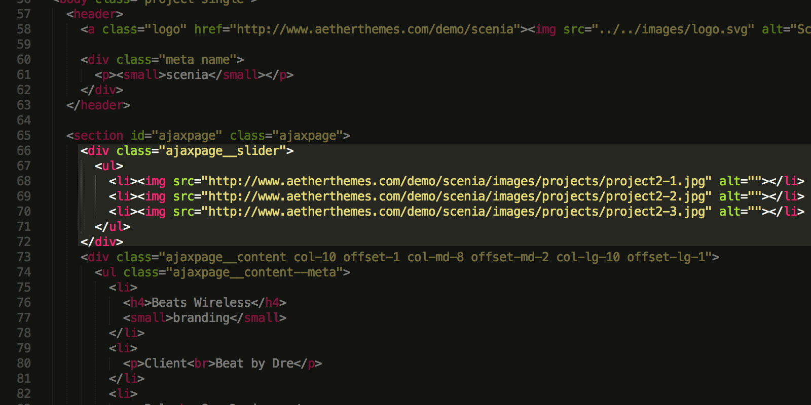
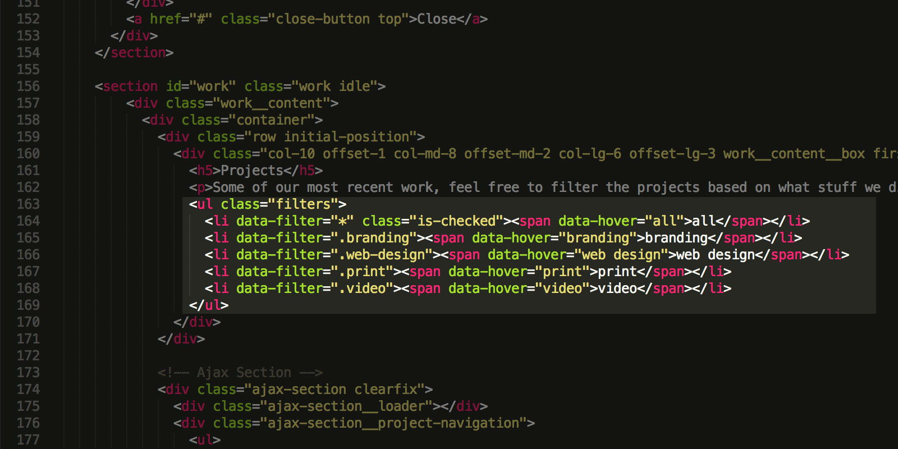
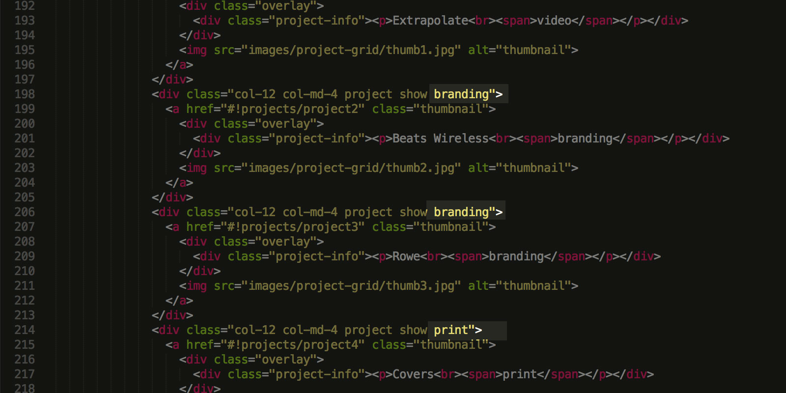

The responsive grid used in Scenia is Bootstrap. You can learn more about the grid itself and it's classes here.
We've utilised SCSS for the creation of Scenia. The file structure of the SCSS files is easy to follow and intuitive. We follow a design system structure that includes thing like layouts, helpers, functions and mixins. In a addition to this we've provided a set of variables that are used within the code, so you can change colors and fonts easily through editing the variables file alone.
For the 3D effects in addition to the main ThreeJS library we have included separate 'setup' scripts, that can be tweaked in the js/3d/ directory. Within those you will find some setting for the rendering, colors and camera positions of all the scene created for Scenia.
The fonts used in Scenia are from the Google web font library. You can change the font by editing the url provided in the HTML where marked and reflect that change in the _variables.scss file. To learn more and choose the perfect font for you site just head over to Google Fonts.
Scenia utilises AJAX for the portfolio, meaning there a couple of things that need to be done in order for it to work.
The AJAX potfolio may not work locally for you, if so just download an app like WAMP or MAMP to set up a local server environment and test the functionality of the portfolio.
The first part is setting up your index page with the portfolio grid. Here you would link your projects by prepending '#!' to the path of your project.
The second part of the set up would be the project page itself. The project files are fully functional on their own and the main content section (excluding the header and footer) are loaded in the home page by AJAX. To make the portfolio slider images work you need to give them direct paths to your server in order to work. Setting up the project itself is pretty straightforward - just remember that when you call in images you have to do it in the way shown in the template, so that when a user decides to open the project page directly, the experience won't be ruined.
The projects utilize a slider function, so all the images you put in the slider list will be part of the slider. If you wish to have only one image for instance just remove the slider markup. The other part of the project is straightforward html markup so just fill in the info and you are done. Video embedding works straight our of the box. Look up project 1 for an example.
Setting up the portfoilo filters relies on two parts - creating the filter option and then attaching a given project to this filter option.
To create the filter option just add a new list item in the filters unordered list, give the new item a 'data-filter' attribute to the filtering category you want it show upon clicking.
After that you need to assign a project to that filter. To do that all you have to do is give your project a class name that is an equivalent to the 'data-filter' attribute you have already created.
The 3D effects Scenia utilises rely on the amazing ThreeJS library. We suggest that you get familiar with the basic by going through the extensive documentation here.